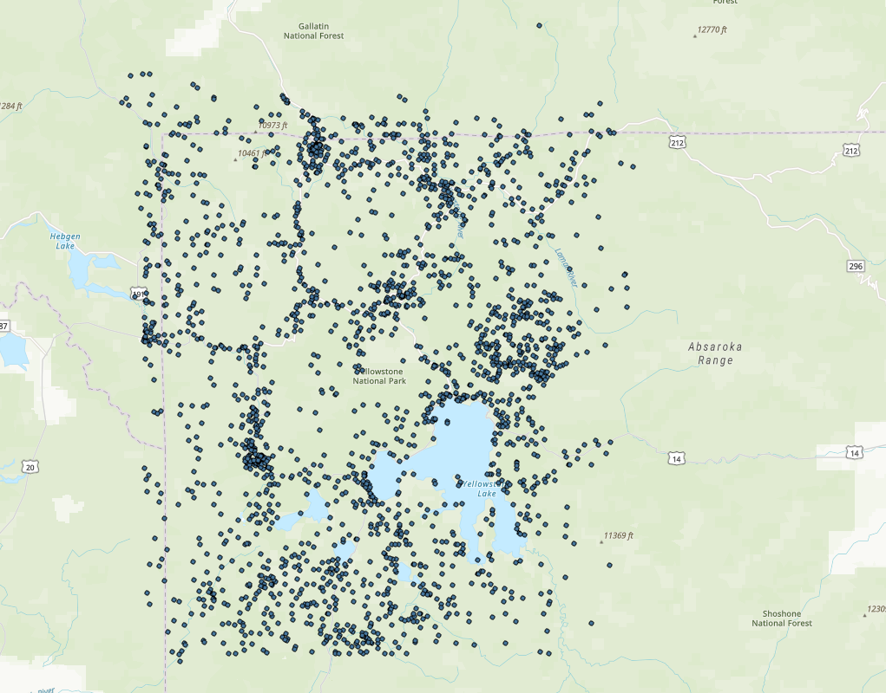
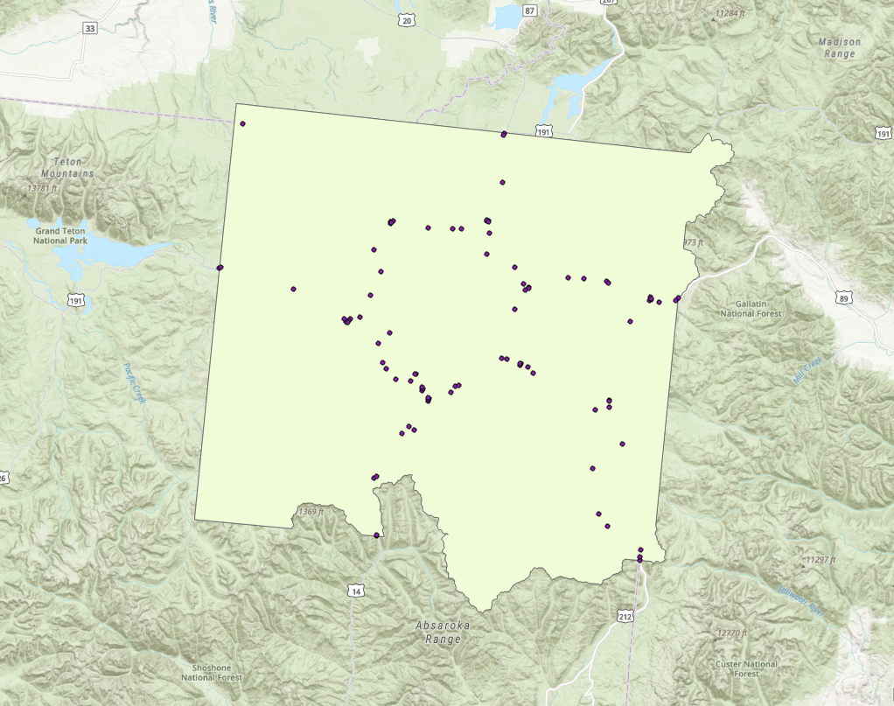
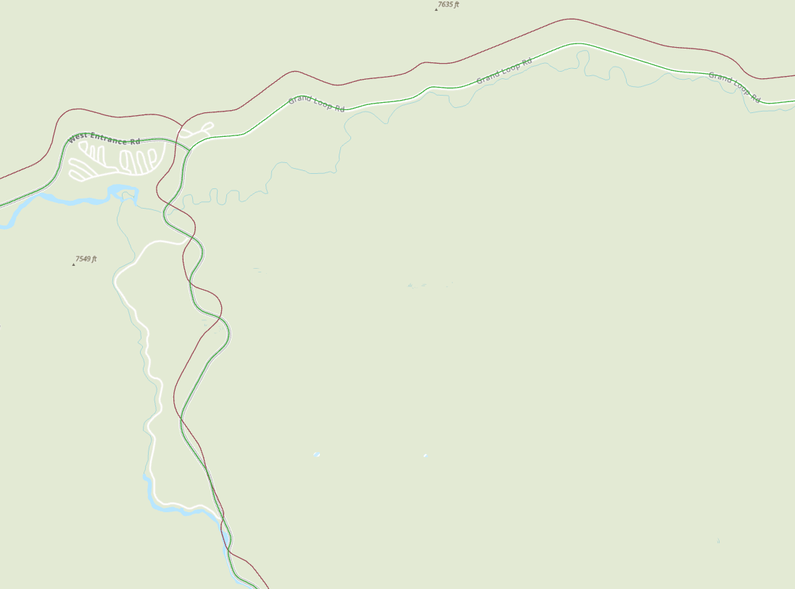
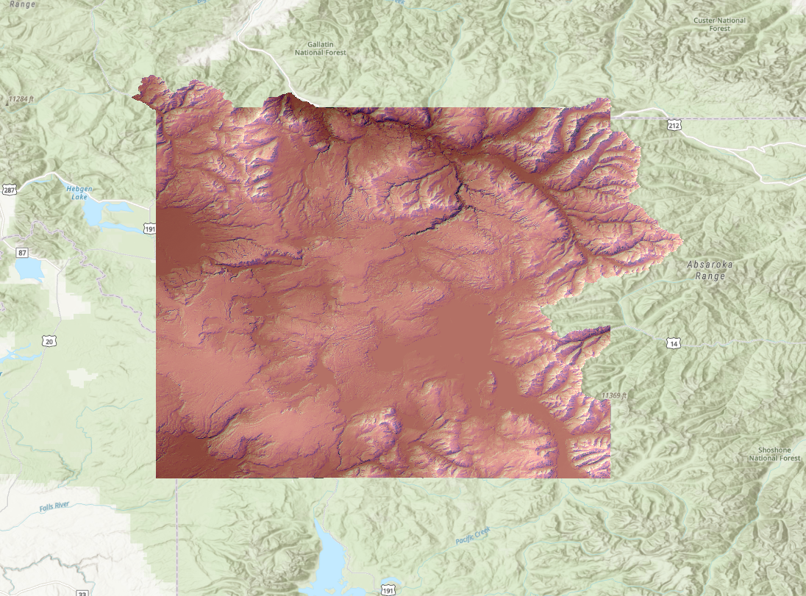
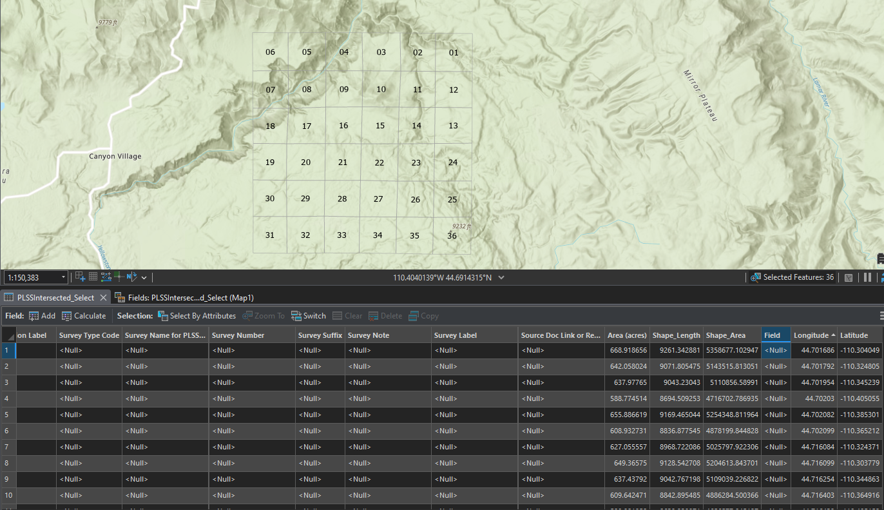

GIS Coursework / Week 08
Yellowstone Coordinate Systems






Overview
Corrected mismatched coordinate systems across several Yellowstone datasets — bison locations, fire starts, park boundaries, roads, and elevation data — so they would display and analyze correctly together.
Process
Used Define Projection and Project to align each layer’s coordinate system, then processed the elevation DEM with Extract by Mask and Hillshade for a shaded relief view of the park.